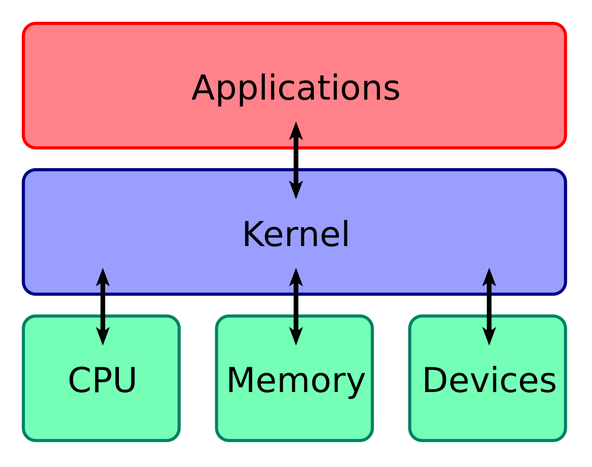
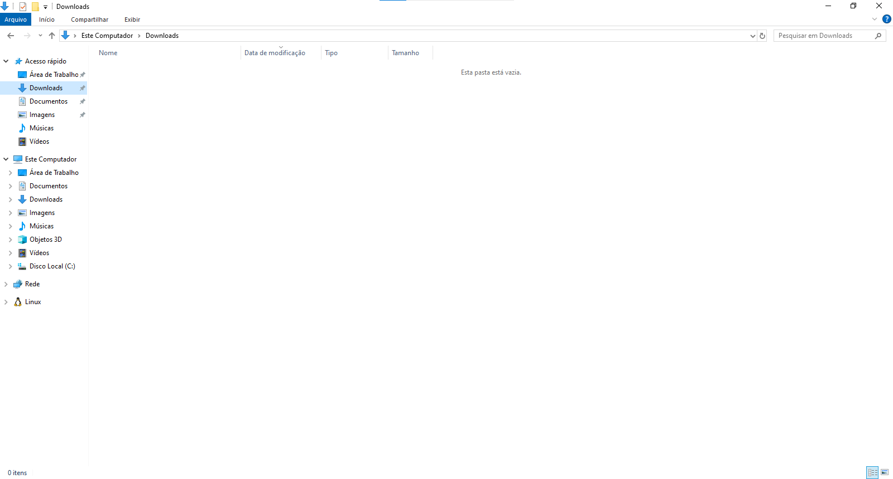

Sistema Operacional
O que é?
Fundamentalmente, um sistema operacional é um software, que pode ser o Linux, Windows, Android, macOS, UNIX, entre outros. No entanto, ele não resume aquilo que seus olhos conseguem ver ou ao que você consegue interagir. Em outras palavras, é um programa que conversa diretamente com o hardware da sua máquina.

Kernel
O que é?
Em computação, o núcleo ou kernel é o componente central do sistema operativo da maioria dos computadores; ele serve de ponte entre aplicativos e o processamento real de dados feito a nível de hardware. As responsabilidades do núcleo incluem gerenciar os recursos do sistema.

Interface do sistema operacional (CLI e GUI)
